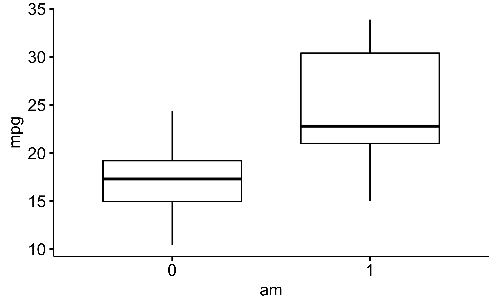
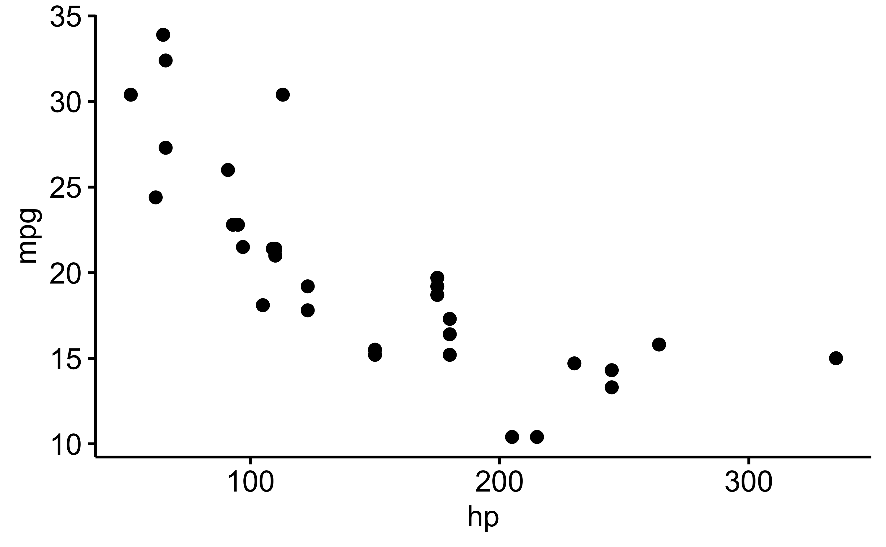
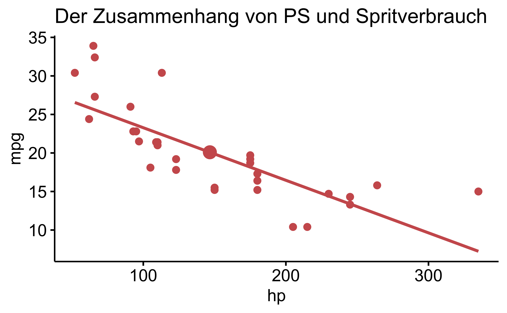
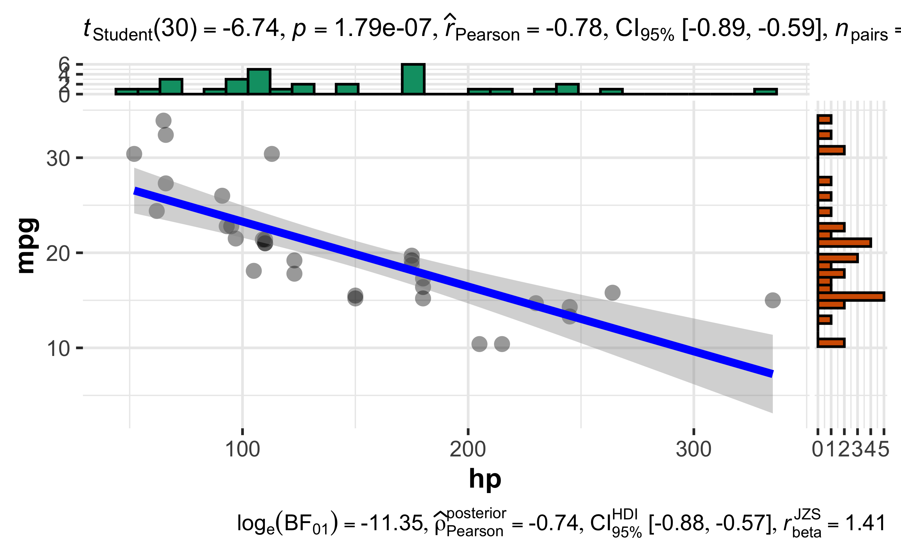

Kapitel 6 Diagramme
Man kann tolle Diagramme in R erstellen, aber es braucht etwas Arbeit. Zumindest mehr als fünf Minuten. Daher machen wir es uns hier bequem, und gehen einen schnelleren Weg, der auch schöne Diagramme in R erzeugt, aber dafür nicht so flexibel ist.
Wir benutzen dafür das R-Paket ggpubr.
Hier können Sie sich Demos anschauen.
Sieht nicht schlecht aus, oder?
Zuerst müssen wir es installieren. Das geht auf bekanntem Wege. Oder sie verwenden den folgenden Befehl, ist vielleicht komfortabler für Sie, Sie brauchen dann nur Copy-Pasten:
install.packages("ggpubr") # nur einmalDann starten wir das Paket durch Anhaken oder wiederum mit einem Befehl:
library("ggpubr")6.1 Zwei Gruppen vergleichen
Ein Klassiker: Zwei Gruppen vergleichen hinsichtlich ihres Mitelwerts oder Medians. Fangen wir mal damit an.
ggboxplot(mtcars, x = "am", y = "mpg")
Merke: Die Argumente der Funktionen bei ggppubr sind:
- Name der Tabelle
- x: Variable auf der X-Achse
- y: Variable auf der Y-Achse
- sonstiges
Als nächstes, sehr ähnliches Diagramm, ein Violinenplot. Aber wir ergänzen noch den Mittelwert pro Gruppe (und dieses Mal mit der Anzahl der Zylinder auf der X-Achse):
ggviolin(mtcars, x = "cyl", y = "mpg", add = "mean")
6.2 Streudiagramm
Gibt es wohl einen Zusammenhang von Spritverbrauch mpg und PS (hp)?
ggscatter(mtcars, x = "hp", y = "mpg")
Pimp my Diagram:
ggscatter(mtcars,
x = "hp", y = "mpg",
color = "indianred",
add = "reg.line", # linearer Trend (Regression)
title = "Der Zusammenhang von PS und Spritverbrauch",
mean.point = TRUE)6.3 Convenience FoodDiagramme
Mit dem R-Paket ggstatsplot kann man auf komfortable Art publikationsreife Diagramme erzeugen.
Installieren wir zuerst das Paket:
install.packages("ggstatsplot")Und dann starten wir es:
library("ggstatsplot")6.3.1 Gruppenvergleich
ggbetweenstats(mtcars,x = am, y = mpg)
Weitere Hinweise zum Gruppenvergleich finden sich hier.
6.3.2 Streudiagramme
ggscatterstats(mtcars, x = hp, y = mpg)Wenn Sie folgende Fehlermeldung bekommen:
Error: Package 'ggside' is required for this function to work. Please install it by running install.packages('ggside').
Dann sollten Sie das angefragte Paket, ggside, noch installieren auf üblichem Weg.
6.4 Fazit
Ist doch schon recht ansehnlich, für fünf Minuten, oder?